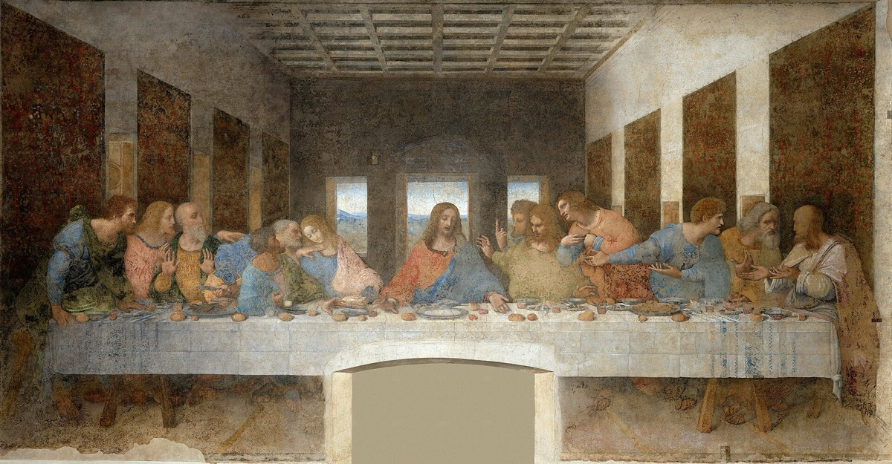

The True Vine
The Upper Room
I am the vine, ye are the branches: He that abideth in me, and I in him, the same bringeth forth much fruit: for without me ye can do nothing.
John 15:5

The talks
- Office John 15:1-8. Israel had been called a vine for centuries, in Isaiah 5 and Psalm 80, and the point of those passages is that the vine failed. He calls himself the true one. Work the husbandman, the purging, and the pruning, and find out what a vinedresser actually does.
- Case John gives five chapters to that night and never records the bread and the cup being instituted. The other three record the bread and the cup and none of the discourse. Find out why, and what each writer was doing.
- Epistle 1 Corinthians 11:23-29. Paul's account of that table is older than any of the four Gospels. He adds the warning about partaking unworthily and says we show the Lord's death till he come. Neither is in Luke.
- Restoration 3 Nephi 18:1-14 and D&C 20:75-79 and 27:1-4. The sacrament restored, the prayers given by revelation, and what the emblems are actually for.
- Text John 13:1-17. The washing of feet, and Peter refusing and then overcorrecting. Find out what that job was and who normally did it.
- World Passover in a rented upper room. Find out the order of the meal, what reclining at table looked like, how many cups there were and what each meant, and where a man would have to be sitting for the host to hand him a sop.
- Witness Judas. He was in the room, he had his feet washed with the rest, and he took the sop from the Lord's own hand. Take him through the questions on the facing page and do not turn him into a cartoon.
- Objection John 17 is a prayer, and it raises a hard question people ask honestly: if he is divine, to whom is he praying, and why does he need to? Name it and answer it from the text.
The title
The vine was not a new image to anyone in that room. Isaiah 5 tells of a vineyard that was planted, fenced, and cared for and brought forth wild grapes. Psalm 80 says a vine was brought out of Egypt and planted, and then asks why its hedges are broken down. For centuries Israel had been told it was the vine, and the story always ended the same way. So when he says I am the true vine, every man at that table would have heard the word true doing real work. Then he moves them into the picture. Ye are the branches. And he says the plainest thing in the discourse: without me ye can do nothing. Not less, not poorly. Nothing. Notice when he chose to teach this. It is the last night, the betrayer has just gone out into the dark, and he spends the hours he has left telling eleven frightened men how to stay connected to him after he is gone. That is what this cohort covers. The longest teaching he ever gave was given to the smallest audience, on the worst night, about what to do when he was no longer there.
Required reading, for every speaker in this cohort
- John 13, 14, 15, 16, and 17, straight through
- Luke 22:7-38
- 1 Corinthians 11:23-29
- 3 Nephi 18:1-14
- Isaiah 5:1-7 and Psalm 80:8-16
Questions for thought
- Read John 13 through 17 in one sitting. What does he spend the most words on, and does that surprise you?
- Washing feet was the job of the lowest servant in the house. Find out why nobody else had done it that night.
- Peter first refuses entirely and then asks to be washed all over. What is wrong with both answers?
- He handed the sop to Judas, which was a gesture of honor to a guest. Why do that to the man about to betray him?
- Paul says some partake unworthily and that this is why many are weak and sickly. What is he actually warning about?
- Find out what pruning does to a vine and why a vinedresser cuts back branches that are already producing.
- In John 17 he prays that they may be one, as he and the Father are one. What kind of oneness is that, and what kind is it not?
- Compare the sacrament prayers in Moroni and the Doctrine and Covenants with what he said at the table. What is preserved word for word?
- He said without me ye can do nothing. Is that your working assumption, or a sentence you agree with and then ignore?